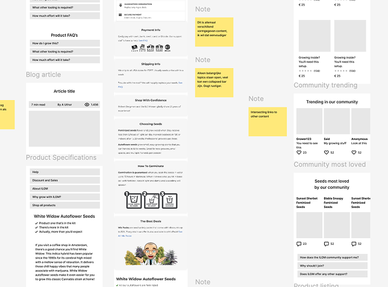

Proudly working on all stages of product design. From research to prototyping and beyond.
I see product design in a very strategic way. It should bring the best for users and the business. This requires a lot of stakeholder management. Alignment. Design evangelism. As I love explaining issues and pitching great ideas, this is very much up my alley.
Information architecture | interaction design
NN Payment App
How to structure the information architecture for an app offering many very different financial services?
Product design | prototyping
Restructure AI driven table

FLYRs conversion optimisation interface hosts an extensive table displaying all flights the platform is covering.
Research | journey mapping
E-commerce restructure
Journey design for an online platform offering Commerce, Community and Content
Interaction design | Information architecture
Filter interaction optimisation
Modals and other examples of disconnected forms of interaction are cumbersome - so how should this be solved?
Product design | prototyping
Intuitive pension overview
Instead of polishing the surface, I proposed to start with the underlying structure.